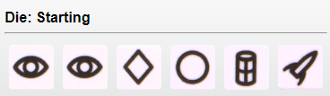
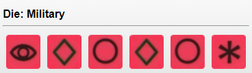
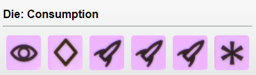
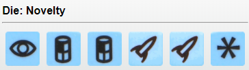
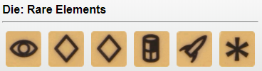
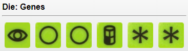
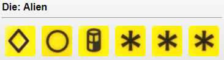

Rollforthegalaxy
Board Game Arena 官方规则文档
Basics
Use your dice (workers/citizens) to complete various actions with the goal of building the best civilization.
You start the game with:
- a player mat with the credit marker starting on 1
- one faction token
- one home world
- one development zone card
- one construction zone card
- three white dice in your cup
- two white dice in your citizenry
- extra dice as shown on your home planet card
Warning: the BGA version is coded to play fast. It will do a lot of actions automatically when they do not require choices. So you might be surprised the first times...
The 5 Actions
The game has five phases that everyone does at the same time until the end game condition reached.
- roll
- assign
- reveal
- resolve
- manage
You start by rolling all your *Worker* dice (those in the cup). They are automatically assigned to the phase matching the face rolled.
All dice with the * symbol are wild.
Choose one of the dice and put it on the black phase strip of the phase you want to play. Only phases that you or one of your opponents select to activate will happen this round. (in a two player game an extra third phase is selected randomly). The dice you use to select a phase doesn't have to match the phase you want to play. The dice underneath the phase strip will be used as resources for that phase.
Dictate
- return one worker to the cup to reassign another worker to a different phase
Some cards may also let you reassign.
Each reassign action can only be used once per turn.
Perform actions
Next, phases happen in order. Dice you have under each chosen phase (and the die on the black strip) will be used to perform that phase's action(s) and sent back to Citizenry. Any dice under phases not chosen, or unused ones, go back into your cup, automatically.
| Face/Phase | Action | Description | Notes |
| Explore | Scout | Discard 0 or more tiles, then draw that many plus 1. | Repeated for each die spent. |
| Stock | Get 2 Money | (max 10 money) | |
| Develop | Develop | Add a die to a development. Automatically built if it has enough dice during develop. | (Possibly several developments per round.) |
| Settle | Settle | Add a die to a world. Automatically built if it has enough dice during settle. | (Possibly several world per round.) |
| Produce | Produce | Add a die to a settled, non-gray world. | Maximum of 1 die on each world. See "Consume" for importance of color. |
| Ship | Trade | Remove another die on a settled world; gain money equal to the world color it is on. | Blue = 3, Brown = 4, Green = 5, Yellow = 6 |
| Consume | Remove another die on a settled world. Get 1 VP. | Bonus 1 (+1 VP): If the die removed from the planet is purple or matches the planet's color.
Bonus 2 (+1 VP): If the ship die used is purple or matches the planet's color |
End of turn: manage and recruit citizens
All used dice were sent back to your citizenry. During this phase you can reactivate them as worker by paying 1$ per die. This is the only use of your money, so you rarely need to keep money. If you spend all your money, you get 1 money at the end of the round.
You can also freely retrieve any dice that are stuck on developments or worlds, to reassign them later.
Game setup
Each player receives a random double tile with a special ability, and a random starter tile next to it. Then you receive two tiles from the shared supply, to form your unbuilt tile stacks. Each tile has two faces: a development or a world. For the first two tiles, one must be a world, the other a development, and you choose which is which.
You also start with 5 white dice.
Game end
When anyone has 12 tiles built, or if all VP chips are used up. The player with the most VPs wins!
If two or more players tie for VPs, each tied player adds (the number of dice in their cup) + (their Galactic Credits). If this cannot break the tie, those players are considered tied.
Watch out!
If you happen to have the Alien Archeology starting tile/ability, ($4 instead of $2 when stocking using a yellow die,) note that the first die used in the Explore phase will always be a yellow die, if possible, regardless of the die you select. Be sure to stock first to get the $4, then scout afterward.
Die Side Summary






